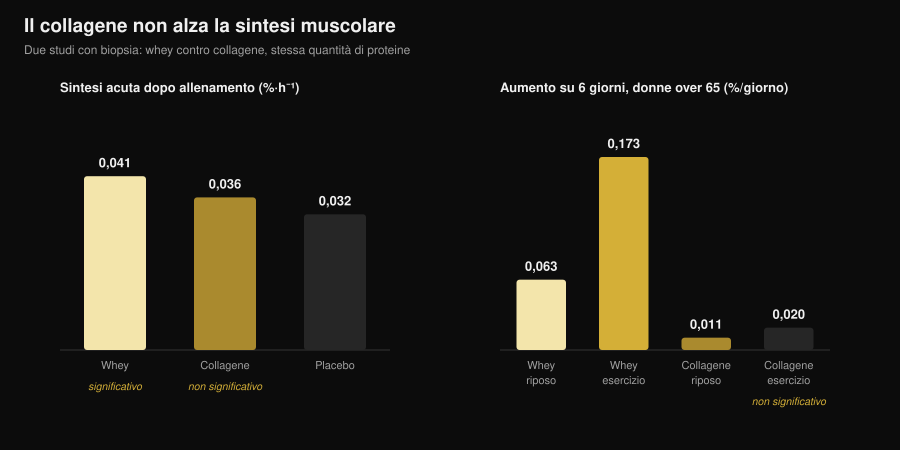
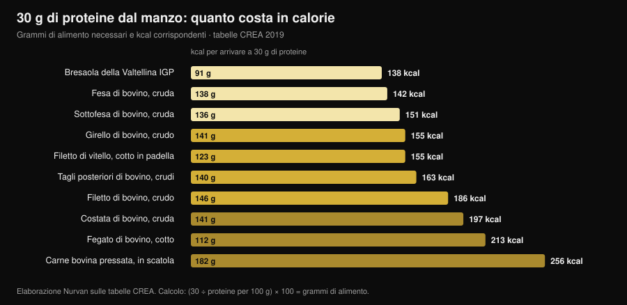

Beef protein: le proteine della carne valgono le whey?
Le ricerche su "beef protein powder" sono cresciute del 467% e il barattolo promette la cosa più logica del mondo: se il muscolo è carne, mangia carne. Sulla carta regge, e la meta-analisi più grande dà ragione al manzo — pareggia con le whey. Il problema è che "beef protein" sull'etichetta non dice da quale parte dell'animale arriva quella polvere, e la differenza fra le due possibilità è la differenza fra un integratore che funziona e uno che non fa niente.

In breve
- Contro le whey è un pareggio. Meta-analisi su 7 studi e 270 persone: nessuna differenza fra proteine di manzo e siero del latte su massa magra (differenza standardizzata −0,01), massa grassa (0,07) e proteine totali assunte (0,04).
- Contro il non integrare, invece, vince. Rispetto a chi non prende nulla, il manzo aumenta massa magra (0,34) e forza degli arti inferiori (0,40). È però l'effetto di "più proteine nella giornata", non di "più manzo".
- La parola che conta sull'etichetta è collagene. Nelle polveri ricavate da collagene la sintesi proteica muscolare non si muove: in donne over 65, su sei giorni, le whey l'hanno alzata di 0,173 %/giorno nella gamba allenata, il collagene di 0,020, un valore non distinguibile dalla partenza.
- L'etichetta non basta sempre. Un'analisi italiana su cinque integratori sportivi del mercato ha trovato casi in cui gli aminoacidi presenti non corrispondevano a quelli dichiarati dal produttore.
- Il vantaggio vero del manzo è il ferro. In triatleti master, dieci settimane di proteine di manzo hanno portato la ferritina da 117 a 150 ng/mL; con whey e carboidrati non è successo.
Perché tutti parlano di beef protein
Il ragionamento che vende il prodotto è semplice e intuitivo: il muscolo è fatto di proteine animali, la carne rossa è la proteina animale per eccellenza, quindi una polvere di manzo dovrebbe essere il modo più diretto per costruire muscolo. Si aggiungono tre argomenti pratici: niente lattosio, niente latticini per chi segue diete carnivore o paleo, e il ferro eme che nelle whey non c'è.
Nessuno di questi punti è assurdo. Il problema è che "beef protein" è un nome commerciale, non una specifica tecnica. Descrive l'animale di provenienza, non la parte. E in un bovino ci sono due materie prime molto diverse che si possono trasformare in polvere.
Cosa c'è davvero dentro un barattolo
La prima materia prima è il muscolo: carne magra idrolizzata o isolata, con un profilo di aminoacidi essenziali vicino a quello della carne che mangi. È quella usata negli studi seri sul beef protein, e funziona.
La seconda è il collagene: ritagli, pelle, tendini, cotenna. È proteina a tutti gli effetti, pesa sull'etichetta nutrizionale come proteina, costa molto meno e si lavora facilmente in polvere. Ma il suo profilo di aminoacidi è squilibrato — tantissima glicina e prolina, pochissima leucina — e la leucina è l'aminoacido che accende la costruzione di proteina muscolare. Una polvere di collagene può dichiarare 25 g di proteine per porzione e non spostare di un millimetro la sintesi muscolare.
Non è un sospetto, è stato misurato tre volte con tecniche diverse. In giovani adulti, 30 g di collagene dopo un allenamento non hanno aumentato in modo significativo la sintesi delle proteine contrattili rispetto al placebo, mentre 30 g di whey sì (Aussieker et al., 2023). In donne over 65, sei giorni di supplementazione: le whey hanno alzato la sintesi sia a riposo sia nella gamba allenata, il collagene in nessuna delle due condizioni (Oikawa et al., 2020). In uomini anziani, 50 g al giorno sopra la quota raccomandata hanno aumentato la sintesi con whey e con pisello, ma non con collagene (McKendry et al., 2024).

E anche quando la materia prima è giusta, l'etichetta non è una garanzia automatica: un gruppo dell'Università di Milano ha caratterizzato la frazione proteica di cinque integratori sportivi in commercio e ha trovato proteine pesantemente glicosilate e, in alcuni casi, aminoacidi aggiunti che non corrispondevano a quelli dichiarati, concludendo che servirebbero test di lotto obbligatori (Pellegrino et al., 2022).
Cosa dice davvero la ricerca
| Affermazione diffusa | Verdetto | Fonte |
|---|---|---|
| "Il manzo costruisce più muscolo delle whey" | Smentito: pareggio | Valenzuela et al., 2019 |
| "Il beef protein non serve a niente" | Smentito, con una precisazione | Valenzuela et al., 2019 |
| "È carne, quindi è una proteina completa" | Da precisare: dipende dalla materia prima | Oikawa 2020; Aussieker 2023; McKendry 2024 |
| "La polvere è meglio della carne vera" | Smentito | Negro et al., 2014 |
| "Senza lattosio, il manzo è l'unica scelta" | Smentito | Sharp et al., 2018 |
| "Più ne prendi, più cresci" | Smentito | McKenna et al., 2021 |
| "Aiuta il ferro" | Confermato, in un contesto preciso | Naclerio et al., 2017 |
Affermazione 1 — "Il manzo costruisce più muscolo delle whey"
È il confronto più diretto e la risposta è un pareggio netto. Una revisione sistematica con meta-analisi ha raccolto sette studi randomizzati per un totale di 270 persone che si allenavano con i pesi, mettendo a confronto proteine di manzo, whey e nessuna integrazione. Fra manzo e whey non è emersa nessuna differenza: proteine totali assunte 0,04, massa magra −0,01, massa grassa 0,07 — differenze standardizzate tutte vicine allo zero e nessuna statisticamente significativa.
Lo si vede anche nei singoli studi. Otto settimane con 46 g di proteine dopo l'allenamento: isolato di manzo, pollo idrolizzato e concentrato di whey hanno tutti aumentato la massa magra rispetto alla partenza, il maltodestrina di controllo no, e fra le tre proteine non c'erano differenze di forza (Sharp et al., 2018).
Affermazione 2 — "Il beef protein non serve a niente"
Nemmeno questo regge. Nella stessa meta-analisi, rispetto a chi non integrava, il manzo ha aumentato le proteine assunte nella giornata (0,68), la massa magra (0,34) e la forza degli arti inferiori (0,40). Sono effetti piccoli ma reali.
La precisazione è importante: quasi certamente non è un effetto del manzo, è l'effetto di arrivare a una quota proteica adeguata. Gli autori lo scrivono chiaramente, e un altro studio lo rende ancora più evidente: in uomini che si allenavano con i pesi, 20 g al giorno di manzo idrolizzato, whey o solo carboidrati hanno prodotto miglioramenti di forza sostanzialmente sovrapponibili, con differenze minime sulla composizione corporea (Naclerio et al., 2017). Se la tua dieta ha già abbastanza proteine, il barattolo aggiunge poco.
Affermazione 3 — "Più ne prendi, più cresci"
Dieci settimane di allenamento con i pesi in adulti di mezza età, con consulenza alimentare e proteine da carne bovina magra: un gruppo a circa 1,0 g per kg di peso al giorno, l'altro a circa 1,6. La forza massimale è aumentata in tutti gli esercizi, sopra e sotto, senza alcun effetto della quantità di proteine (McKenna et al., 2021). Oltre una certa soglia, aggiungere polvere non aggiunge risultato: è lo stesso principio che vale per gli orari di assunzione, come ho visto nell'articolo su quando prendere gli integratori.
Affermazione 4 — "La polvere è meglio della carne vera"
Uno studio italiano ha fatto la prova più diretta possibile: 135 g di carne in scatola magra dopo l'allenamento, cioè 20 g di proteine e 1,7 g di grassi, per otto settimane. Il gruppo che la mangiava ha perso 1,9 kg di massa grassa e guadagnato 2,3 kg di massa libera da grasso; il gruppo di controllo senza integrazione no (Negro et al., 2014). Carne vera, nessuna polvere, stesso risultato. Gli autori la definiscono "una strategia nutrizionale in aggiunta ad altre proteine o integratori di aminoacidi": un'opzione, non una superiorità.
Affermazione 5 — "Aiuta il ferro"
Qui il manzo ha un vantaggio suo, e si vede in chi ne ha bisogno. In triatleti master di 35-60 anni, dieci settimane con 20 g al giorno di proteine di manzo hanno aumentato la ferritina da 117 a 150 ng/mL, mentre whey e carboidrati non hanno prodotto variazioni; nello stesso gruppo lo spessore del vasto mediale è stato preservato, cosa che negli altri due gruppi non è avvenuta (Naclerio et al., 2017).
Va letto per quello che è: un risultato in atleti di endurance, dove le riserve di ferro sono spesso sotto pressione. Nella stessa meta-analisi vista sopra, il manzo non ha aumentato il ferro assunto rispetto al non integrare in modo statisticamente significativo. E se sospetti una carenza, l'unica strada sensata è un esame del sangue e un medico, non un integratore scelto da solo.
Il conto delle calorie: manzo vero contro polvere
Se il punto del beef protein è prendere proteine dal manzo, vale la pena sapere quanto costa farlo con la carne. Ho calcolato sulle tabelle CREA quanti grammi di ogni taglio servono per arrivare a 30 g di proteine, la quantità usata nella maggior parte degli studi sulla sintesi muscolare, e quante calorie porta con sé.

Il risultato è che la carne magra non è affatto cara in calorie: 138 g di fesa cruda danno 30 g di proteine con 142 kcal, poco più di una porzione di petto di pollo. Novantuno grammi di bresaola fanno lo stesso con 138 kcal. All'estremo opposto, la carne in scatola pressata chiede 182 g e 256 kcal per la stessa quota, e una costata ne chiede 197.
Una porzione di polvere sta in genere fra 100 e 130 kcal per 25-30 g di proteine: in pratica la stessa cosa della fesa, con due differenze pratiche. La polvere si trasporta, si beve in trenta secondi e si dosa al grammo; la carne sazia, costa meno a parità di proteine e non ha bisogno di nessun controllo sull'etichetta. La scelta è logistica, non fisiologica.
Come applicarlo
- Prima conta le proteine che mangi già. Se sei intorno a 1,6 g per kg di peso al giorno distribuiti sui pasti, il margine di guadagno di qualsiasi polvere è piccolo: lo studio sui 1,0 contro 1,6 g/kg non ha trovato vantaggi nel salire ancora.
- Leggi gli ingredienti, non il fronte del barattolo. Cerca "collagene", "idrolizzato di collagene", "gelatina", "proteine idrolizzate di origine bovina" non meglio specificate. Se compaiono nelle prime posizioni, quella polvere non è un sostituto delle whey.
- Cerca il profilo aminoacidico in etichetta. Senza leucina dichiarata (indicativamente 2-3 g per porzione nelle fonti ad alto valore biologico) non hai modo di sapere cosa stai comprando.
- Non pagare un sovrapprezzo per "è carne". Sui risultati in palestra manzo e whey pareggiano. Se il manzo costa di più e non hai un motivo specifico per sceglierlo, non ce l'hai.
- Il motivo specifico esiste in due casi. Intolleranza al lattosio marcata o esclusione dei latticini: lì il manzo è una scelta sensata, ma non l'unica — nei confronti diretti anche il pollo idrolizzato ha funzionato.
- Per il ferro, passa dagli esami. Ferritina bassa, stanchezza, endurance: sono cose da misurare e da discutere con un medico, non da gestire con un integratore comprato online.
Prova Nurvan — le proteine contate sui dati CREA, non a occhio
In Nurvan la parte nutrizione lavora sul database CREA: registri gli alimenti e vedi quanta proteina stai davvero prendendo dai pasti, giorno per giorno. Nella sezione integrazione tieni traccia di cosa assumi e quando, e nello stesso profilo trovi i carichi di allenamento e gli esami che hai caricato. Così la domanda "mi serve una polvere?" smette di essere un'impressione e diventa un numero.
Domande frequenti
Il beef protein è meglio delle whey?
No, pareggia. La meta-analisi su sette studi randomizzati e 270 persone non trova differenze fra proteine di manzo e whey su massa magra, massa grassa e proteine totali assunte (Valenzuela et al., 2019). Scegli in base a tolleranza, prezzo e preferenze.
Come capisco se un beef protein è fatto con collagene?
Dalla lista ingredienti e dal profilo aminoacidico. Diciture come collagene idrolizzato, gelatina o "proteine bovine idrolizzate" senza altra specifica sono il segnale; un contenuto di leucina non dichiarato o molto basso lo conferma. Nelle prove con biopsia muscolare il collagene non ha aumentato la sintesi proteica, né nei giovani né negli anziani.
Il beef protein va bene per gli intolleranti al lattosio?
Sì, è una delle ragioni sensate per sceglierlo, ma non è l'unica opzione: nel confronto diretto a otto settimane anche il pollo idrolizzato ha aumentato la massa magra quanto manzo e whey (Sharp et al., 2018), e gli isolati di siero contengono quantità minime di lattosio.
Meglio una polvere di manzo o mangiare carne?
Sui risultati, la carne vera regge benissimo: 135 g di carne magra in scatola dopo l'allenamento hanno ridotto la massa grassa e aumentato la massa libera da grasso in otto settimane (Negro et al., 2014). La polvere vince solo su comodità e precisione del dosaggio.
Leggi anche
- Proteine vegetali o animali per i muscoli? — cosa succede quando la fonte proteica cambia davvero, misurato con la biopsia.
- Tier list integratori forza: cosa dice la ricerca — dove si collocano le proteine in polvere rispetto a creatina e caffeina.
- Quando prendere gli integratori: conta l'ora? — perché la quantità totale pesa più del momento in cui la assumi.
Fonti
Riferimenti bibliografici recuperati tramite PubMed. Tema scelto con la ricerca di tendenza del 3 novembre 2026: "beef protein powder" è fra le query fitness in più forte crescita, ma le pagine che la occupano appartengono quasi tutte a chi vende la polvere.
- Valenzuela PL, Mata F, Morales JS, Castillo-García A, Lucia A, 2019. Does Beef Protein Supplementation Improve Body Composition and Exercise Performance? A Systematic Review and Meta-Analysis of Randomized Controlled Trials. Nutrients 11(6):1429. PMID 31242624. DOI
- Sharp MH, Lowery RP, Shields KA, Lane JR, Gray JL, Partl JM, Hayes DW, Wilson GJ, Hollmer CA, Minivich JR, Wilson JM, 2018. The Effects of Beef, Chicken, or Whey Protein After Workout on Body Composition and Muscle Performance. Journal of Strength and Conditioning Research 32(8):2233-2242. PMID 28399016. DOI
- Naclerio F, Seijo M, Larumbe-Zabala E, Earnest CP, 2017. Carbohydrates Alone or Mixing With Beef or Whey Protein Promote Similar Training Outcomes in Resistance Training Males: A Double-Blind, Randomized Controlled Clinical Trial. International Journal of Sport Nutrition and Exercise Metabolism 27(5):408-420. PMID 28530448. DOI
- Naclerio F, Seijo M, Larumbe-Zabala E, Ashrafi N, Christides T, Karsten B, Nielsen BV, 2017. Effects of Supplementation with Beef or Whey Protein Versus Carbohydrate in Master Triathletes. Journal of the American College of Nutrition 36(8):593-601. PMID 28910233. DOI
- Negro M, Vandoni M, Ottobrini S, Codrons E, Correale L, Buonocore D, Marzatico F, 2014. Protein supplementation with low fat meat after resistance training: effects on body composition and strength. Nutrients 6(8):3040-9. PMID 25093275. DOI
- Oikawa SY, Kamal MJ, Webb EK, McGlory C, Baker SK, Phillips SM, 2020. Whey protein but not collagen peptides stimulate acute and longer-term muscle protein synthesis with and without resistance exercise in healthy older women: a randomized controlled trial. The American Journal of Clinical Nutrition 111(3):708-718. PMID 31919527. DOI
- Aussieker T, Hilkens L, Holwerda AM, Fuchs CJ, Houben LHP, Senden JM, van Dijk JW, Snijders T, van Loon LJC, 2023. Collagen Protein Ingestion during Recovery from Exercise Does Not Increase Muscle Connective Protein Synthesis Rates. Medicine and Science in Sports and Exercise 55(10):1792-1802. PMID 37202878. DOI
- McKendry J, Lowisz CV, Nanthakumar A, MacDonald M, Lim C, Currier BS, Phillips SM, 2024. The effects of whey, pea, and collagen protein supplementation beyond the recommended dietary allowance on integrated myofibrillar protein synthetic rates in older males: a randomized controlled trial. The American Journal of Clinical Nutrition 120(1):34-46. PMID 38762187. DOI
- Pellegrino L, Hogenboom JA, Rosi V, Sindaco M, Gerna S, D'Incecco P, 2022. Focus on the Protein Fraction of Sports Nutrition Supplements. Molecules 27(11):3487. PMID 35684425. DOI
- McKenna CF, Salvador AF, Hughes RL, Scaroni SE, Alamilla RA, Askow AT, Paluska SA, Dilger AC, Holscher HD, De Lisio M, Khan NA, Burd NA, 2021. Higher protein intake during resistance training does not potentiate strength, but modulates gut microbiota, in middle-aged adults: a randomized control trial. American Journal of Physiology-Endocrinology and Metabolism 320(5):E900-E913. PMID 33682457. DOI
Giammaria Loi è il fondatore di Nurvan. Si allena con i pesi dal 2012, lavora come personal trainer e coach certificato FIPE dal 2013 e gareggia nel powerlifting a livello nazionale dal 2018. Ogni articolo che firma parte dagli studi scientifici e arriva a ciò che funziona davvero in palestra.
Nota: contenuto informativo, non sostituisce il parere di un medico o professionista.